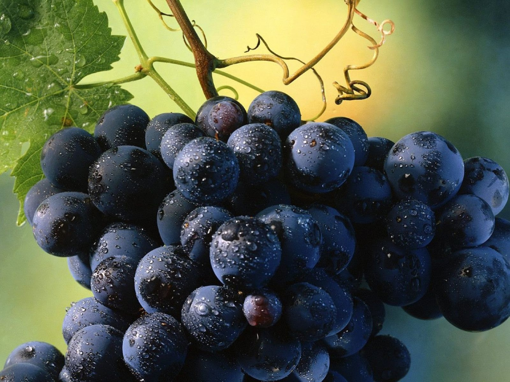

Esses são os tipos de uvas
- Cabernet Sauvignon
- Pinot Noir
- Chardonnay
- Sauvignon Blanc
- Malbec
- Merlot
Quais são as diferenças entre os tipos de uvas ?
Abaixo está uma tabela explicativa sobre as uvas e suas diferenças
| Uvas | Composição | Sabor |
|---|---|---|
| Cabernet Sauvignon | Uva de casca grossa, que produz vinhos encorpados, com taninos marcantes e grande potencial de guarda. | Frutas escuras, especiarias e toques de carvalho. |
| Pinot Noir | Uva delicada, que produz vinhos elegantes, de corpo leve a médio e alta complexidade aromática. | Frutas vermelhas, ervas e toque terroso. |
| Chardonnay | Uva versátil, que produz desde vinhos frescos e minerais até rótulos mais encorpados e complexos. | Maçã, pera, cítricos e baunilha. |
| Merlot | Uva de casca média, que produz vinhos suaves, de corpo médio e sabores frutados. | Frutas vermelhas, especiarias e toques de chocolate. |
| Malbec | Uva de origem francesa que encontrou grande expressão na América do Sul, resultando em vinhos intensos, frutados e com boa estrutura. | Frutas negras, violeta e especiarias. |
| Sauvignon Blanc | Uva aromática, que produz vinhos frescos, vibrantes e com alta acidez, muito apreciados por sua expressão frutada. | Maracujá, lima, ervas frescas e tons cítricos. |
Como escolher a uva/vinho ideal ?
Escolher envolve considerar o tipo de vinho, a ocasião, o prato que será servido e as preferências pessoais. Aqui estão algumas dicas para ajudá-lo a fazer a escolha certa:
- Considere o tipo de vinho: Tinto, branco, rosé, espumante ou fortificado.
- Harmonização com alimentos: Escolha vinhos que complementem os sabores dos pratos.
- Ocasião: Vinhos leves para eventos casuais e vinhos mais encorpados para ocasiões especiais.
- Preferências pessoais: Leve em conta seu gosto pessoal e experiências anteriores.
- Preço e qualidade: Avalie o custo-benefício e busque recomendações de especialistas.
Lembre-se de que a melhor maneira de descobrir seu vinho favorito é experimentando diferentes tipos e estilos. Aproveite a jornada de degustação e descubra o vinho que mais combina com você!
Abaixo temos um vídeo explicando sobre os vinhos.
Conclusão
Conhecer os diferentes tipos de uva é essencial para entender melhor o universo dos vinhos. Cada variedade possui características próprias de aroma, sabor, acidez e intensidade, que tornam cada vinho único. Da intensidade da Cabernet Sauvignon à leveza da Pinot Noir, passando pelo frescor da Sauvignon Blanc e pela versatilidade da Chardonnay, existe uma uva para cada gosto e ocasião. Explorar essas variedades é também descobrir novos sabores e aprender a escolher o vinho que mais combina com você. Afinal, por trás de cada taça existe uma uva, uma história e uma experiência a ser apreciada.
Esperamos que esta página tenha ajudado você a conhecer um pouco mais sobre os principais tipos de vinho!